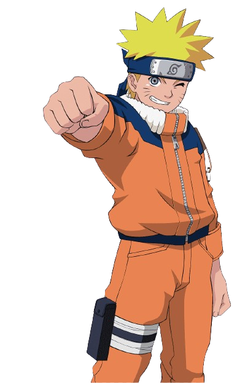
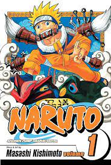
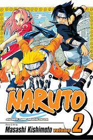
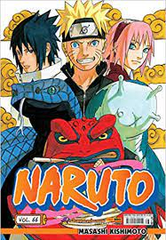

Um blog para aqueles que não tem medo

em demostrar seu jeito ninja de ser!

05/05/2024
• Naruto Uzumaki, embarca em sua primeira missão como parte de uma equipe liderada por Kakashi Hatake.

15/05/2024
• Naruto busca provar seu valor como ninja e se aproxima de seus companheiros de equipe, Sasuke e Sakura.

25/05/2024
• Naruto, equipe e sapo enfrenta novos desafios ao proteger o construtor de pontes Tazuna no País das Ondas.